Official Brand Guidelines
Apresentação, história, propósito, posicionamento, personalidade, público, território, moodboard
Propostas, logotipo oficial, construção, proteção, redução, variações, símbolo, usos incorretos
Paleta, proporção, conversões, contraste e cores funcionais
Famílias, pesos, hierarquia e exemplos
Iconografia, grafismos, texturas, padrões e fotografia
Tom de voz em português e inglês, slogans
Motion, design system, componentes e interface do jogo
Digital, redes sociais, promocional, roupas e pranchas
Acessibilidade, governança e manutenção
EXPRESSION SESSION é um jogo de surfe feito para o ar. Não é sobre ficar em pé na onda: é sobre usar a onda como rampa e escrever, lá em cima, um aéreo que só você faria daquele jeito.
A identidade nasce da cultura que inventou o aéreo: os vídeos caseiros de surfe e skate, os fanzines xerocados, os adesivos colados na rabeta, os flyers de show de garagem. Ela pega essa atitude e a organiza com o rigor de uma marca esportiva premium.
Este manual define como a marca aparece em todo lugar: no jogo, nas redes, nas lojas de jogos, numa camiseta ou no deck de uma prancha.
No surfe, "expression session" é a bateria sem regras de julgamento tradicional: os melhores surfistas entram na água para mostrar estilo, criatividade e risco. Nada de ondas protocolares. É ali que manobras novas aparecem.
O jogo leva esse espírito para cada onda: a roleta sorteia um desafio, mas a onda é sua. Desça, bombeie, leia a seção, comprima, solte no Lip e invente.
Punk é fazer com o que se tem, do seu jeito, alto. Surfe aéreo é a mesma coisa sobre a água. O conceito junta:
Agressiva, mas organizada. Suja na borda, limpa no centro.
Dar ao jogador a liberdade de se expressar no ar e o caminho técnico para evoluir até lá.
Para jogadores que gostam de esportes radicais e de dominar uma técnica, EXPRESSION SESSION é o jogo de surfe especializado em manobras aéreas que trata o estilo como pontuação e a progressão como cultura, com a autenticidade do surfe underground em vez da estética genérica de jogo esportivo.
| Somos | Não somos |
|---|---|
| Especialistas em aéreos | Um simulador genérico de surfe |
| Independentes e autênticos | Corporativos ou "fofos" |
| Técnicos e precisos | Arcade sem regras |
| Contemporâneos com raiz nos anos 90/00 | Retrô pixelado ou nostálgico |
Escolhe a própria linha. A onda é dele.
Desconfia do óbvio e quebra a regra com critério.
Fala curto, alto e com energia.
Combina giro, grab e extensão como ninguém.
Usa os termos reais do surfe e não força gíria.
Quer o recorde e mostra o número.
Respeita a técnica: cada aéreo se aprende.
Faz do próprio jeito, com acabamento profissional.
18 a 35 anos. Surfa ou já surfou, conhece os nomes das manobras e quer ver física e nomenclatura respeitadas.
Valoriza: autenticidade, termos certos, Lip, frontside, backside.
15 a 30 anos. Cresceu com jogos de skate e snowboard. Gosta de combos, recordes e de dominar um sistema de comandos.
Valoriza: precisão, progressão, pontuação clara.
Público de música independente, skate de rua e cultura de fanzine. Chega pela estética e fica pela atitude.
Valoriza: estilo, identidade forte, produtos (camiseta, adesivo).
Comunicação internacional em inglês nas peças de marca; interface e instruções em português, com os termos técnicos do surfe preservados.
Reinterpretadas com acabamento atual: vetores precisos, grade, tipografia controlada e muito respiro.
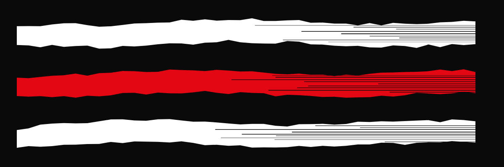
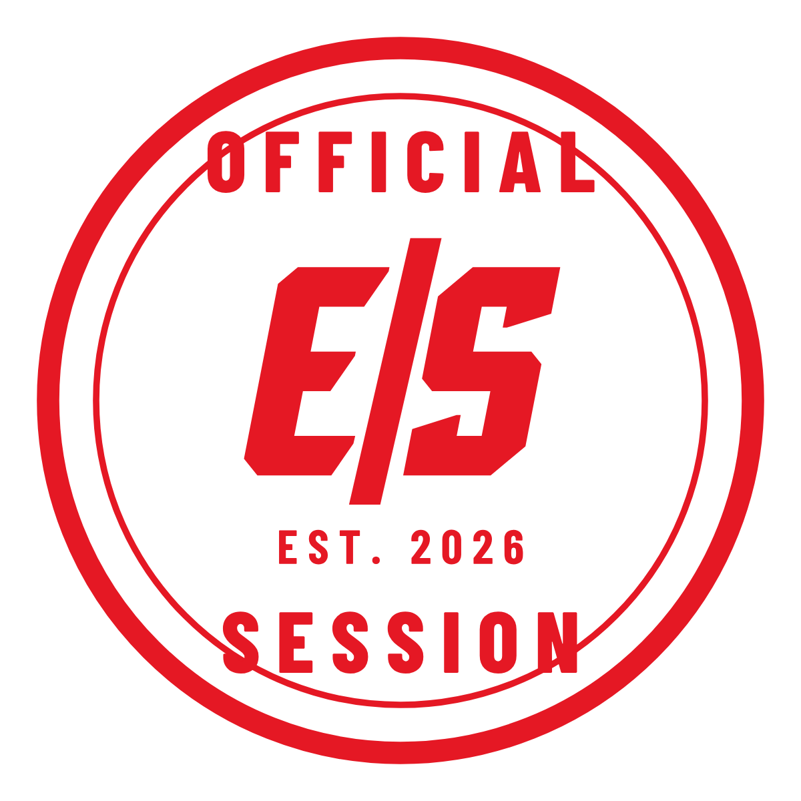
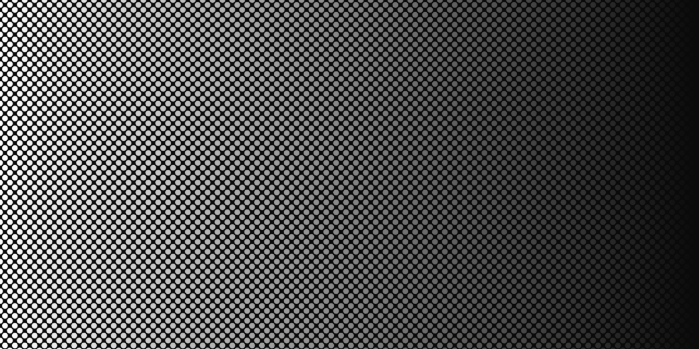
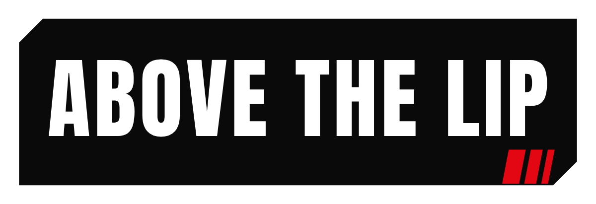

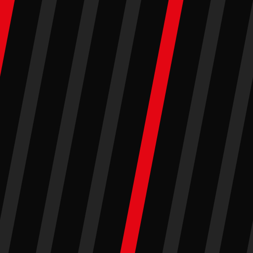
Moodboard montado só com material próprio: quadros do jogo, texturas e adesivos da marca. Nenhuma imagem de terceiros.

Lettering angular próprio, inclinado a 11°, com faixas de velocidade /// e monograma E/S cortado pelo Lip.
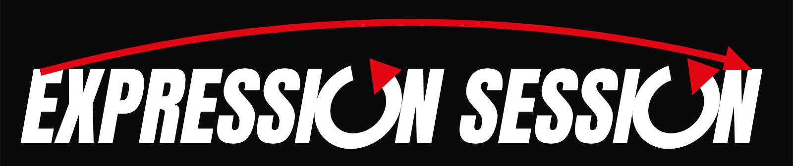
Base tipográfica condensada inclinada; os Os viram anéis de rotação e um arco de trajetória passa por cima.

Lettering reto em estêncil sobre fita rasgada, como lambe-lambe e adesivo de rabeta.
| Critério (1 a 5) | A | B | C |
|---|---|---|---|
| Originalidade | 5 | 3 | 4 |
| Legibilidade | 5 | 3 | 3 |
| Personalidade punk | 4 | 3 | 5 |
| Aplicação digital (UI, HUD) | 5 | 3 | 2 |
| Escalabilidade (16 px a outdoor) | 5 | 2 | 3 |
| Reconhecimento | 5 | 4 | 3 |
| Total | 29 | 18 | 20 |
É a única proposta que funciona igual no menu, no HUD, num favicon de 16 px e num outdoor. O desenho das letras é exclusivo (não é uma fonte), então ninguém reproduz a marca digitando.
| Medida | Valor (altura da letra = 100) |
|---|---|
| Altura da caixa alta | 100 |
| Haste vertical | 22 |
| Barra horizontal | 19 |
| Inclinação | 11° |
| Corte dos terminais | 9 (diagonal) |
| Chanfro dos cantos | 6 a 16 |
| Espaço entre letras | 6 |
| Entrelinha EXPRESSION / SESSION | 22 |
| Faixas /// | 64 · 42 · 24, espaço 10 |
O desenho é gerado por brand/tools/letters.py: mudar uma medida ali atualiza todos os arquivos de uma vez.
Área de proteção = altura de uma letra (X) em volta de todo o logotipo. Nada entra nesse espaço: texto, borda, outro logo ou elemento gráfico forte.
 Símbolo: 9 mm / 32 px
Símbolo: 9 mm / 32 pxAbaixo de 240 px use a versão sem textura e sem assinatura (es-logo-wordmark). Abaixo de 120 px use o símbolo.
Branco (sobre vermelho ou foto)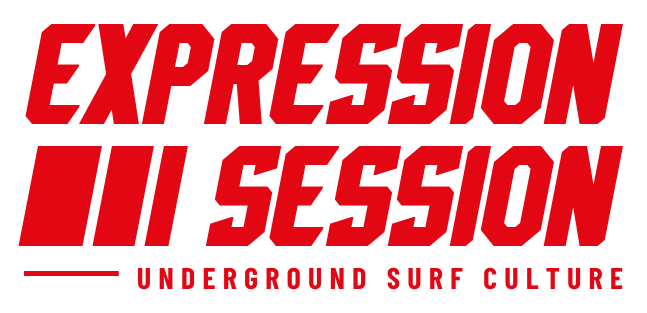
Vermelho (sobre branco)
CompactoSímbolo E/S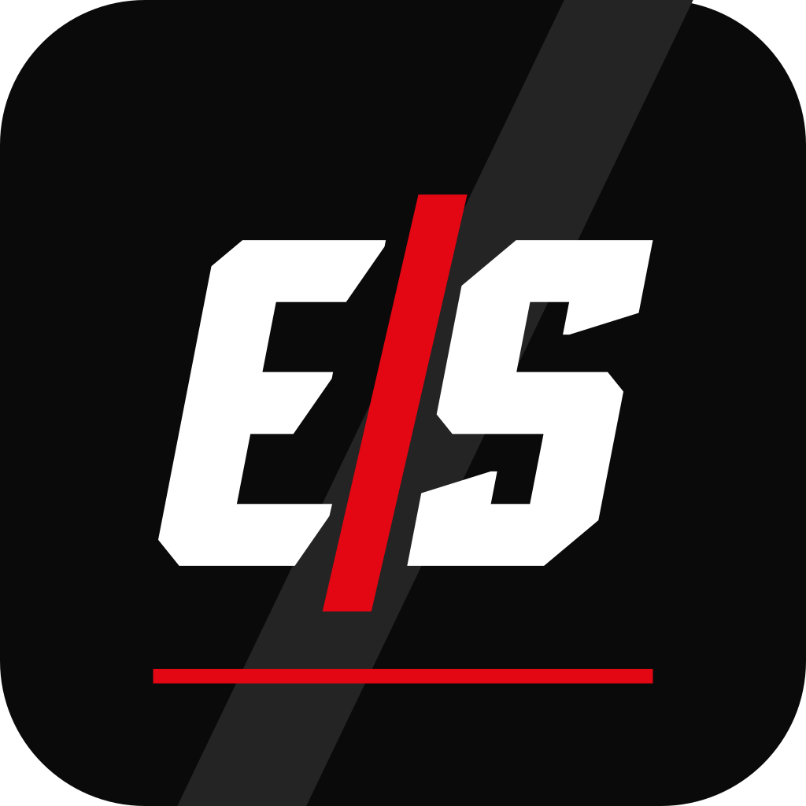
Ícone de aplicativo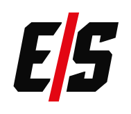
Símbolo preto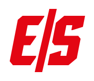
Símbolo vermelho
Símbolo branco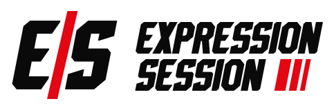
Compacto pretoEm 16 a 32 px o monograma completo vira mancha: o favicon usa só o S em preto sobre vermelho, com a faixa do Lip embaixo.
Também não: recriar o lettering com uma fonte, separar as faixas /// do nome, mudar a inclinação, contornar as letras ou colocar o logotipo dentro de formas que não sejam o selo oficial.
Proporção visual: 60 preto · 25 branco · 10 vermelho · 5 cinza. CMYK aproximado para impressão em papel couché; prove sempre com a gráfica. Azul, verde, amarelo e roxo não são cores da marca: aparecem só no mar, no céu, na natureza e na personalização do surfista.
| Amostra | Par | Contraste | WCAG 2.1 |
|---|---|---|---|
| Aa 123 | Texto branco sobre preto | 19.80:1 | AAA |
| Aa 123 | Texto branco sobre asfalto | 15.52:1 | AAA |
| Aa 123 | Texto branco sobre vermelho (botões) | 4.88:1 | AA |
| Aa 123 | Rebel Red sobre preto | 4.06:1 | AA grande |
| Aa 123 | Signal Red (texto) sobre preto | 5.62:1 | AA |
| Aa 123 | Signal Red sobre asfalto | 4.41:1 | AA grande |
| Aa 123 | Concrete sobre preto | 5.01:1 | AA |
| Aa 123 | Concrete sobre asfalto | 3.93:1 | AA grande |
| Aa 123 | Concrete Light sobre asfalto | 7.40:1 | AAA |
| Aa 123 | Preto sobre branco | 19.80:1 | AAA |
| Aa 123 | Vermelho sobre branco | 4.88:1 | AA |
| Aa 123 | Amber funcional sobre preto | 10.83:1 | AAA |
Títulos, campeonatos, publicidade, resultados. Sempre em caixa alta, peso único 400, espaço +1%.
SIL OFL 1.1 · Vernon Adams
Pontuação, cronômetro, multiplicadores, velocidade, botões e rótulos. Pesos 500 a 800, algarismos tabulares (tnum).
SIL OFL 1.1 · Jeremy Tribby
Menus, diálogos, instruções, configurações. Pesos 400 a 700. Mínimo de 12,5 px na tela.
SIL OFL 1.1 · Jeremy Tribby
Avaliadas e descartadas: Teko (números estreitos demais em 13 px), Oswald (pouco agressiva para títulos), Archivo Black (larga demais para HUD), Inter (neutra demais para a marca; segue como fonte de sistema reserva). Licenças em brand/licenses.
| Nível | Amostra | Fonte · peso · tamanho · espaço |
|---|---|---|
| Hero | AIR IS EXPRESSION. | Anton 400 · 48–104 px · +1% |
| H1 tela | PREPARAÇÃO DA BATERIA | Anton 400 · 30–44 px · +1% |
| Manobra | AIR REVERSE | Anton 400 · 44–72 px · sombra de registro |
| Score | 12.480 x4 | Barlow Condensed 800 · 30–96 px · tnum |
| Seção / botão | // CONDIÇÕES DO MAR | Barlow Condensed 700 · 14–21 px · +7 a +16% |
| Corpo | Segure Espaço subindo a face e solte perto do Lip. | Barlow 500 · 15 px · 1,45 |
| Secundário | Cada onda varia um pouco em torno destes valores. | Barlow 500 · 13 px |
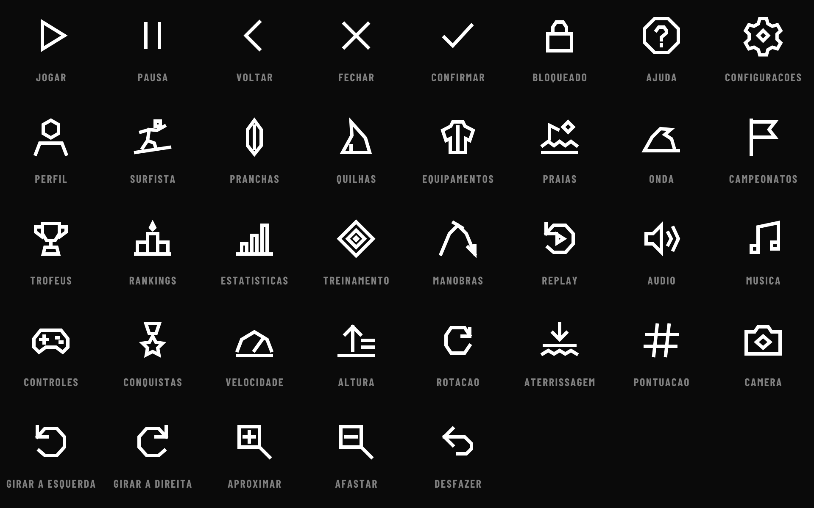
Grade de 24 px, traço de 2 px, pontas retas (square) e junções em quina (miter). Formas a partir de losangos, octógonos e diagonais: nada de círculos perfeitos ou cantos arredondados. 38 ícones em brand/icons/svg, usados no jogo por src/ui/icons.ts.
Corte do Lip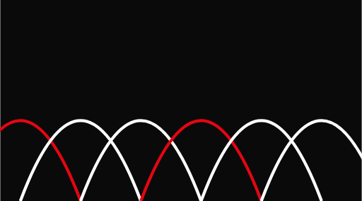
Trajetória do aéreo Marca de impacto
Marca de impacto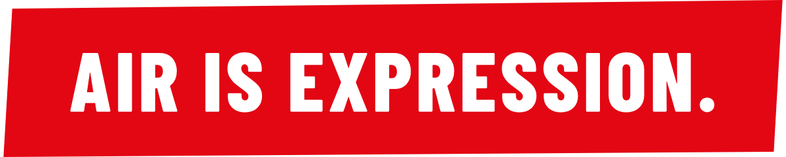
Fita / adesivo Moldura com fita
Moldura com fita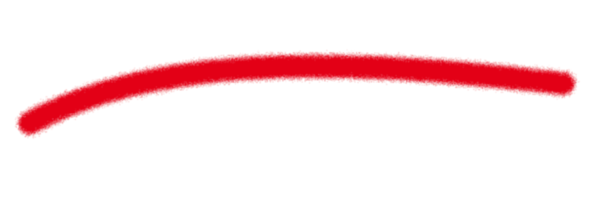
SprayAsfalto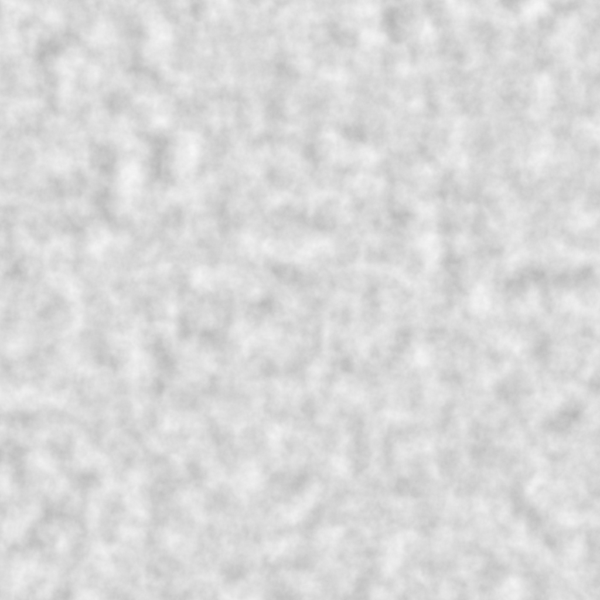
Concreto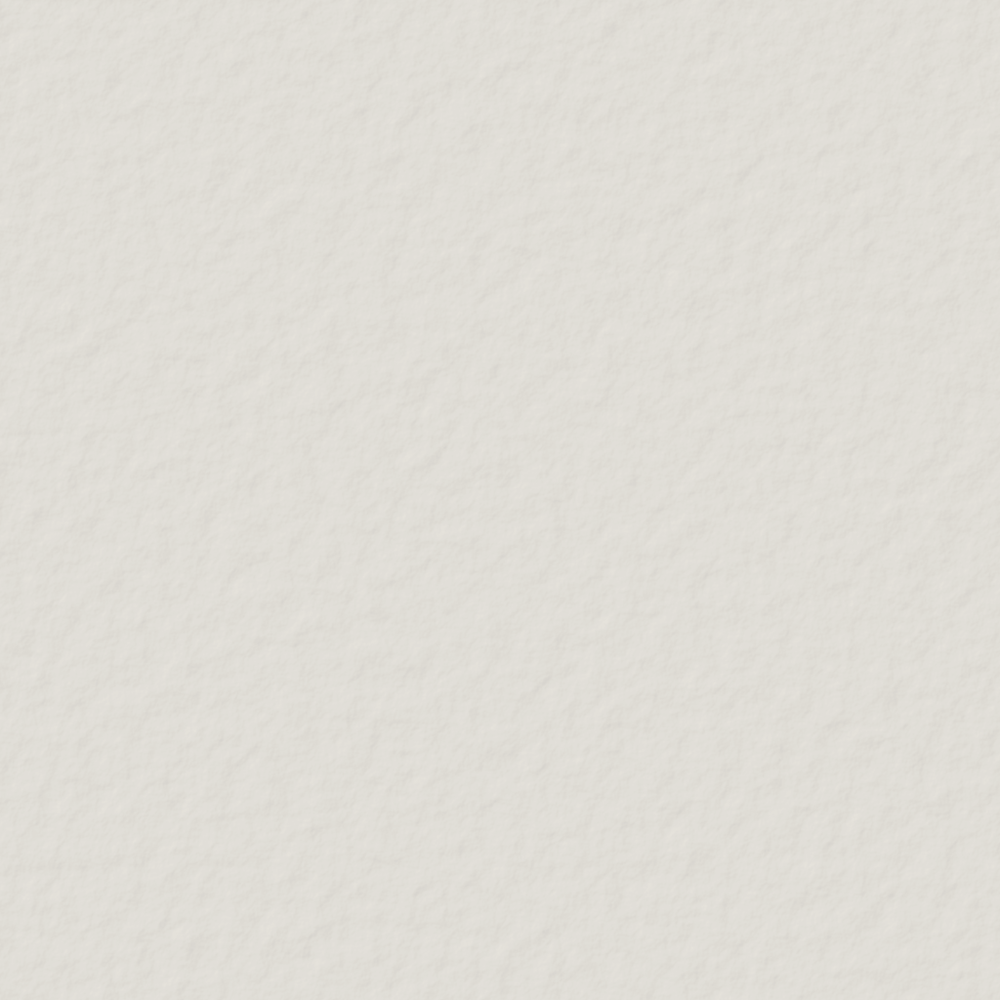
Papel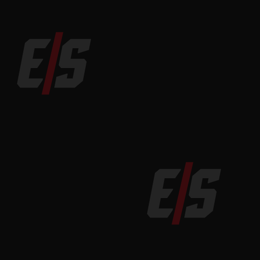
Monograma repetido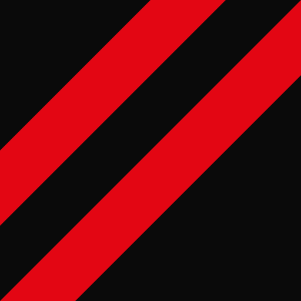
Faixa diagonalTexturas são camadas de no máximo 10% de opacidade sobre fundos e fotos. Nunca sobre números, texto pequeno ou o centro do HUD.
brand/tools/photos.cjs) ou fotos com licença registrada em brand/licenses.Inglês nas assinaturas e campanhas internacionais. Português (Brasil) em toda a interface, instruções e textos longos.
Termos técnicos ficam em inglês como na água: Lip, drop, bottom turn, frontside, backside, grab, tail, air reverse, rodeo, alley-oop. Nunca "lábio" ou "borda da onda".
| Diga | Evite |
|---|---|
| Solte no Lip. | Pressione o botão de salto no momento adequado. |
| Pouso limpo! | Parabéns, você completou a manobra com sucesso! |
| A onda fechou. | Game over. |
| Own the air. | The best surf game ever!!! |
| Novo recorde pessoal. | Você é o melhor surfista do mundo. |
| Carregue o giro na compressão. | Faça um giro legal. |
Slogan oficial. Junta o nome do jogo com o que ele tem de único: o aéreo como forma de expressão pessoal. Curto, internacional, funciona como assinatura e como frase de tela de carregamento.
| Linha | Uso |
|---|---|
| Own the air. | Lançamento, pôster |
| Beyond the lip. | Site, trailer |
| No rules. Just style. | Redes sociais |
| Above the lip. | Adesivo, produto |
| Style is everything. | Campeonatos |
| Launch loud. (original) | Trailer, eventos |
| Write your air. (original) | Personalização |
| Every air is a signature. (original) | Replays, compartilhamento |
Assinatura institucional: UNDERGROUND SURF CULTURE.
Corte diagonal da esquerda para a direita, 420 ms, ease-out (0.2, 0.8, 0.2, 1).
Máscara que abre na horizontal com 12 px de deslocamento, 420 ms.
Desliza e endireita (de -6° para 0°), 700 ms; as faixas /// entram 300 ms depois.
Entram em cascata de 40 ms; hover em 120 ms com barra vermelha lateral; pressionado desce 1 px.
"Soco" de escala 1 → 1,18 → 1 em 450 ms sempre que o total ou o combo mudam.
Nome do aéreo com sombra de registro vermelha, entra inclinado a -8° e sobe 38 px em 900 ms.
Carimbo que bate: escala 1,6 → 0,96 → 1, rotação -4°, 500 ms.
Logotipo vetorial já no HTML (aparece antes do JavaScript), barra de carregamento inclinada a 11°.
Com prefers-reduced-motion, animações viram 1 ms e os pop-ups só esmaecem. Sem flashes, sem pulsar repetitivo.
brand/design-system/tokens.json é a fonte única. O script build_brand.py gera src/ui/tokens.css (variáveis --es-* e @font-face). src/ui/style.css só lê papéis (--accent, --surface, --font-num...) a partir desses tokens.
| Grupo | Tokens |
|---|---|
| Cor | 5 de marca, 8 de apoio, 3 funcionais |
| Tipografia | 3 famílias, 9 tamanhos |
| Espaço | 4 · 8 · 12 · 16 · 24 · 32 · 48 |
| Forma | raio 0–3 px, cortes 8 · 12 · 18 px |
| Sombra | painel, registro (3 px vermelho), elevação |
| Movimento | 120 · 200 · 420 ms, ease-out, punch, 11° |
--es-underground-black | #0A0A0A |
--es-rebel-red | #E30613 |
--es-pure-white | #FFFFFF |
--es-concrete-gray | #808080 |
--es-asphalt-gray | #242424 |
--es-signal-red | #FF3B45 |
--es-red-pressed | #B0040F |
--es-red-hover | #FF1A27 |
--es-concrete-light | #B3B3B3 |
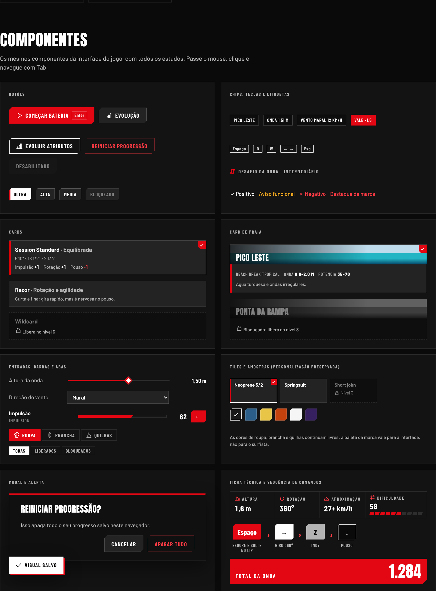
Botões (primário, secundário, contorno, perigo, pequeno, selecionado, desabilitado, bloqueado), chips, teclas, cards, card de praia, controles deslizantes, abas, tiles, amostras, modal, aviso, ficha técnica, sequência de comandos e total da onda. Galeria viva em brand/showcase/index.html.


Menu. Logotipo vetorial, slogan, perfil do jogador e cinco ações. O preto entra pela esquerda e deixa a onda e a demonstração do surfista à direita.
Preparação. Pranchas e quilhas com modificadores; praias em cards com as cores reais de cada pico e os dados do lugar (tipo, altura, potência, vento).


Ficha da manobra. Nome em Anton, trajetória desenhada a partir da altura e rotação de referência, quatro números-chave, sequência de comandos tirada da legenda do jogo (Espaço no Lip → giro → grab → ↓ pouso) e a ficha técnica completa.
HUD. Placar no canto superior esquerdo, condições no direito, medidores e legenda nas bordas de baixo. O centro fica livre para a onda e o corpo do surfista.
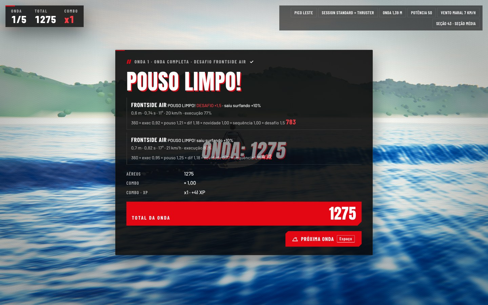

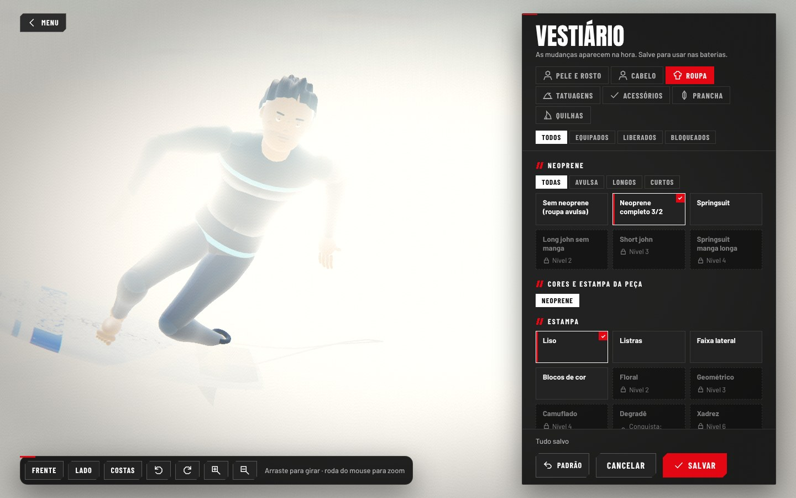
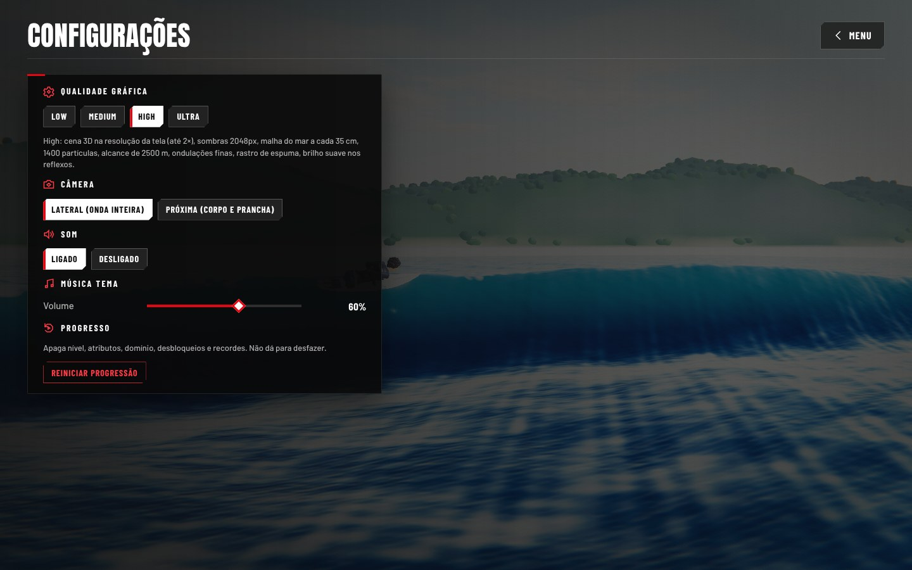
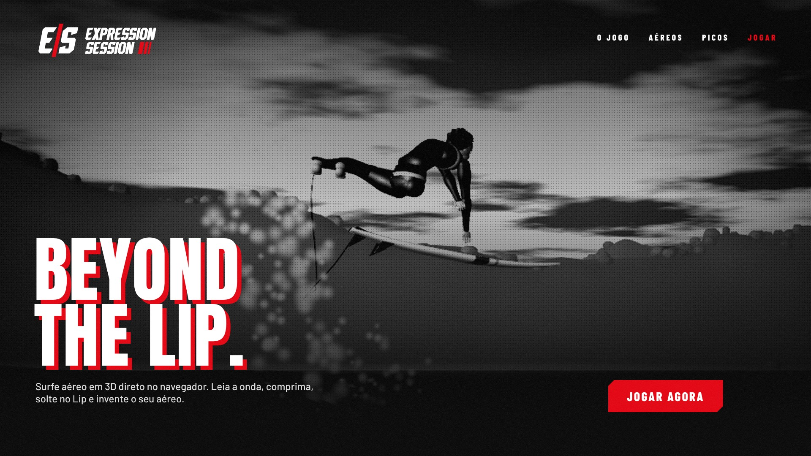
Imagem de apresentação do site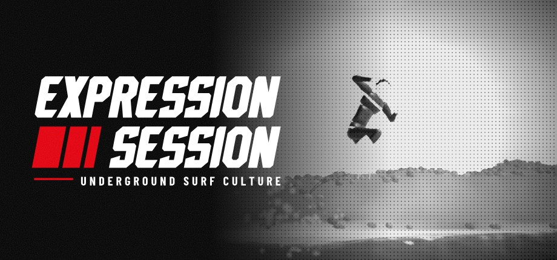
Cápsula para plataformas 920×430 Capa de biblioteca 600×900
Capa de biblioteca 600×900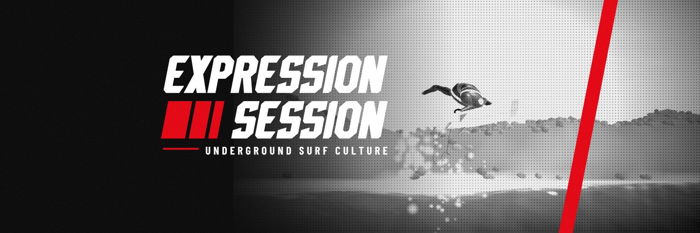
Capa 1500×500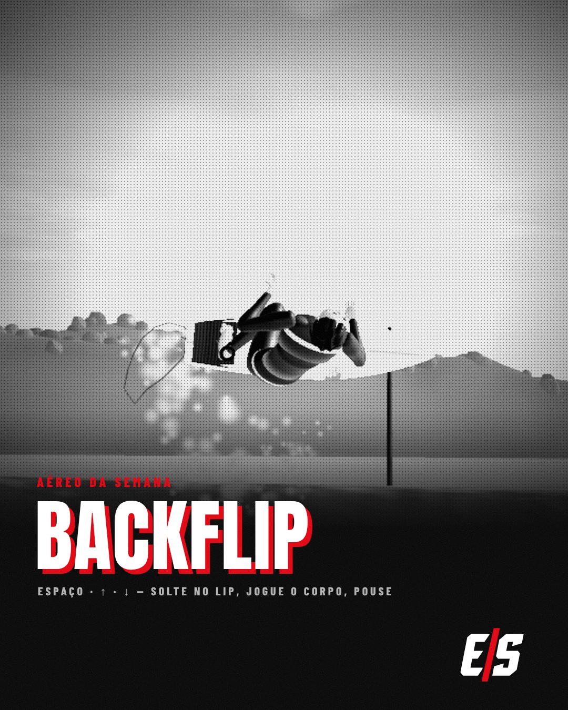
Post 1080×1350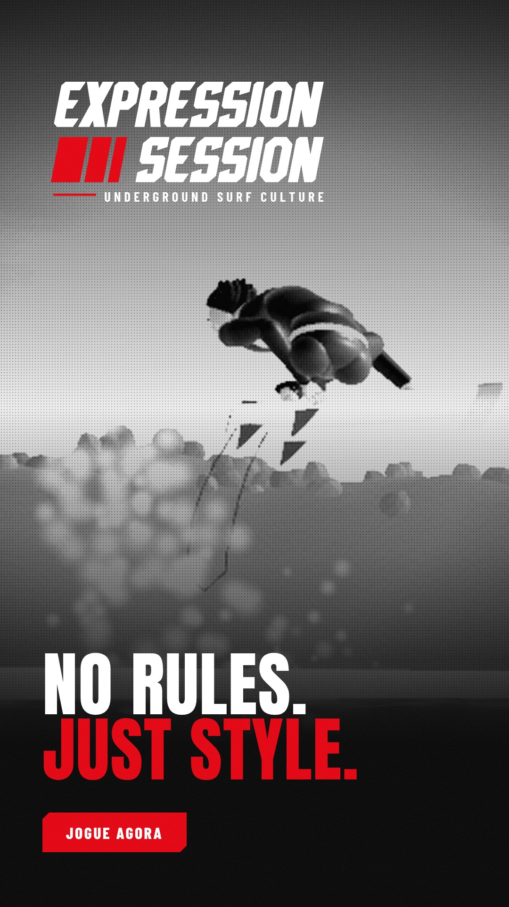
Stories 1080×1920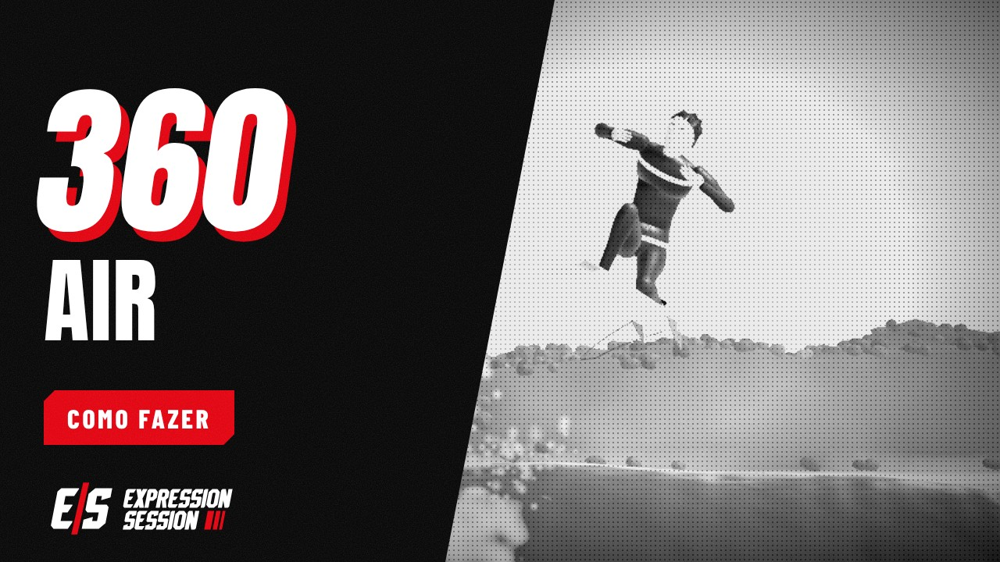
Thumbnail YouTube 1280×720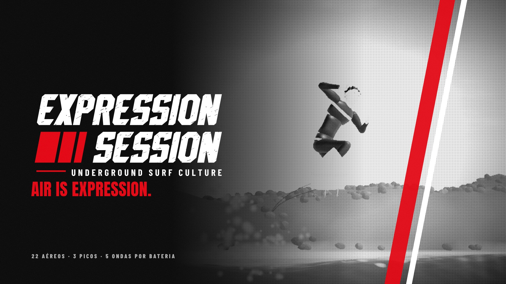
Capa oficial / key art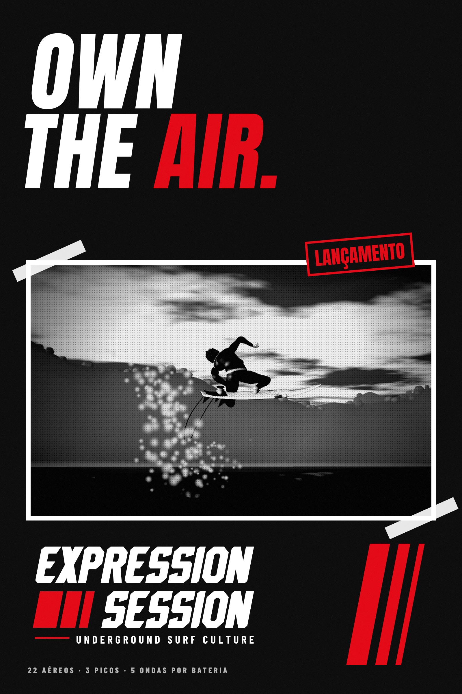
Pôster de lançamento Banner horizontal
Banner horizontal Wallpaper desktop
Wallpaper desktop Wallpaper mobile
Wallpaper mobile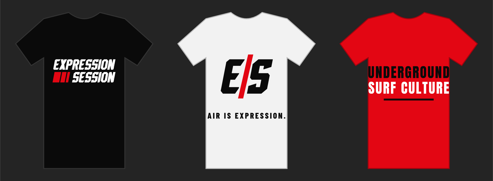

Estampas opcionais de prancha (Lip Slash, Underground, Halftone Rebel, Concrete Chevron) e camisetas conceituais. Elas somam às opções de personalização do vestiário: nenhuma arte ou cor existente do jogador foi removida.
prefers-reduced-motion).font-display: swap: o texto aparece mesmo antes da fonte carregar.lang="pt-BR") e ícones decorativos com aria-hidden.brand/tools/letters.py | Desenho do lettering |
brand/tools/build_brand.py | Logos, ícones, texturas, padrões, adesivos, tokens |
brand/design-system/tokens.json | Fonte única de cores, tipos e tempos |
brand/tools/build_promo.py | Peças promocionais (HTML editável) |
brand/tools/build_manual.py | Este manual |
brand/showcase/index.html | Galeria viva |
brand/licenses/ | Registro de licenças |
tokens.json, com uso e contraste documentados.brand/licenses/REGISTRY.md.capture.cjs.